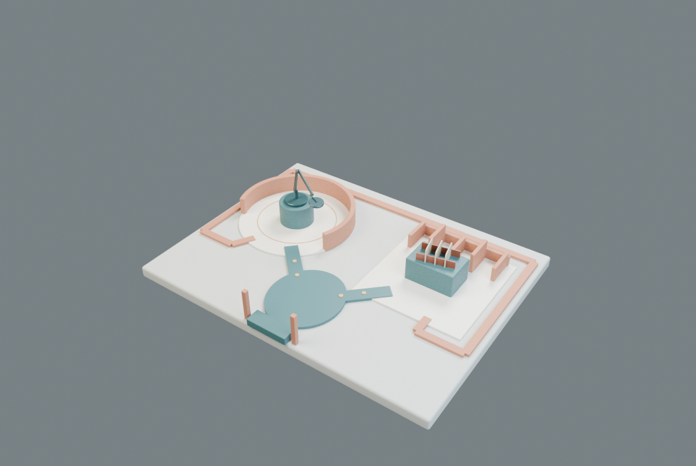

00 关系广场
在两种连接方式之间选择路径。圆庭围绕转动，梳齿廊沿插接展开。
拖动旋转 · 右键拖动平移 · 滚轮缩放
触屏：单指旋转，双指平移 / 缩放
方向键平移 · + / − 缩放
1 / 2 直达工位 · Home 回全景 · Esc 关闭
点选地面标记前往，点选模型查看连接。
场景与物件固定；没有自动装配动画。
这是无需 JavaScript 或图形支持的备用目录；三维空间是本作品的主体验。

在两种连接方式之间选择路径。圆庭围绕转动，梳齿廊沿插接展开。
沿圆庭围看灯臂与铰轴。这里的转动是一种连接语义，不是正在播放的装配动作。模型保持原始固定姿态。
查看模型与介绍页沿梳齿廊观察两条轨与隔板的关系。重复而不同高度的空间鳍墙，回应槽接结构的方向与节奏。
查看模型与介绍页SD01 新空间设计候选；实际体验与审美反馈待确认。GPU / 真机触屏未验。